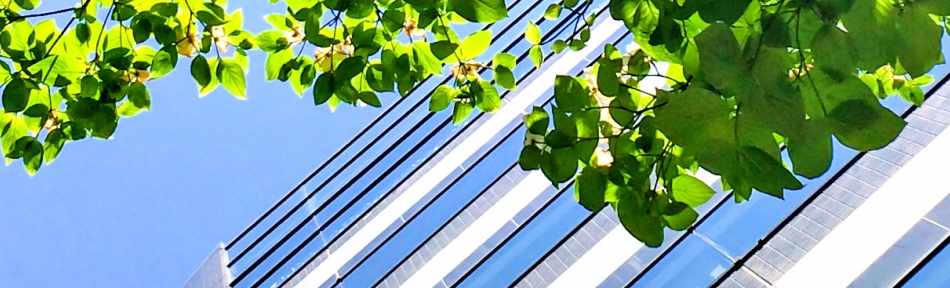

〇〇〇眼科
医師紹介
診療案内
診療時間
施設紹介
アクセス

お知らせ
火曜日の午後の受付は18時までとなりました。
6月14日（木）～16日（土）は休診です。
6月5日（火）、19日（火）、29日（金）副院長は不在です。
コンタクトレンズ処方希望の方は午前中は11：30まで、午後は17：30までにご来院ください。来院時間がそれ以降の場合は、当日の処方に至らない場合があります。
診療担当医については「診療時間」のページをごらんください。
予約診療の担当は副院長となります。院長の診療は受付順です。
毎週水曜日の午前中は副院長は不在です。
朝は8時30分ごろからあけておりますので、受付表にご記名をお願いします。
おおむね10番くらいまでの受付であれば予約なしでも9時30分くらいまでに診察に入れます。
再来の患者さんは、予約の上受診お願いいたします。
診療予約
診療のご予約は、インターネットからも承っております。 インターネット、専用電話からの診察の予約はおおむね１週間先まで、医院受付では当日を含め３日先まで承っております。お手元に診察券をご用意の上、ご利用ください。 当院を初めて受診される方は予約なしでおいでください。